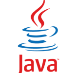

Веб-разработка — процесс создания веб-сайта или веб-приложения. Основными этапами процесса являются веб-дизайн, вёрстка страниц, программирование на стороне клиента и сервера, а также конфигурирование веб-сервера. Первый сайт был создан 6го августа 1991го года. Это был набор примитивных веб-страниц, которые, собственно, и презентовали всемирную паутину — World Wide Web. В 1994 году люди впервые использовали CSS. На сайтах появилась система навигации и веб-разработчики начали добавлять на сайты изобржения. В 1995 году разработчики начинают использовать скрипты и анимацию, передвижные элементы, благодаря появлению PHP и JavaScript. 2003 год — появилась WordPress — система управления контентом, которая базируется на PHP и MySQL. В 2007м году начали создавать мобильные сайты. Основой мобильного веба стали фреймворки Bootstrap и Foundation — с их помощью удалось сделать страницы более адаптивными.
Web-разработка
Актуальность работы в IT
| Плюсы | Минусы |
| Высокая зарплата | Высокая конкуренция |
| Возможность работать удаленно | Приходится постоянно учиться, т.к. сфера IT постоянно развивается и не стоит на месте |
| Возможности для роста, т.к. эта сфера широко востребованна | Сидячая работа, что плохо сказывается на здоровье |
| Возможность реализовать интересные проекты | Устраиваясь на работу в IT-компанию, вас ожидает низкий старт |
Популярные языки и технологии
Python – популярный и перспективный язык. Его часто выбирают в качестве первого для знакомства с программированием. Сам же язык известен как интерпретируемый и используется в том числе для написания скриптов. Недостатками языка являютсяы зачастую более низкая скорость работы и более высокое потребление памяти написанных на нём программ по сравнению с аналогичным кодом, написанным на языках, таких как C или C++.

C - это язык программирования, который на сегодняшний день является одними из самым популярных и распространенных языков программирования, который позволяет создавать приложения для любого спектра задач: разработка прикладных приложений, мобильная разработка и особенно системное программирование. К плюсам этого языка относится высокая скорость работы, поэтому данный язык особенно часто используют в случаях, где необходимо обеспечить высокую производительность.
Java — это объектно-ориентированный, многоплатформенный язык программирования, который является достаточно универсальным. Данный язык программирования часто используется для веб-разработки и для разработки под Android.